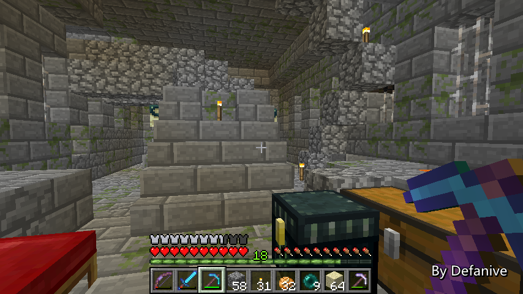

虽然说1.6.1已经出了，但是目前仍然在1.5.2下玩单机世界
主要原因是因为Optifine还没有更新到161
现在换了电脑配置也好了，并不是说没有Optifine 161玩起来就卡
但是用Optifine习惯了，没有的感觉还是很奇怪的
所以在Optifine更新前还是留守152吧
一旦161的Optifine出了，我就会换到161玩
PS 其实前几天已经把玩1.6.1的东西很久了
尤其是马这方面的，具体结果等以后再说吧
目前贴吧里也没看到什么特别好的解析的帖子
——来自 MCLive

18386楼
2013-07-05 22:53